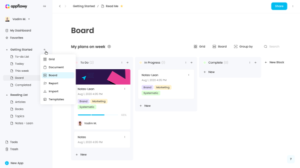
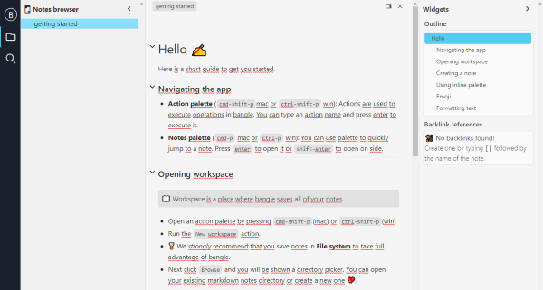
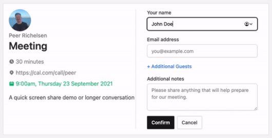
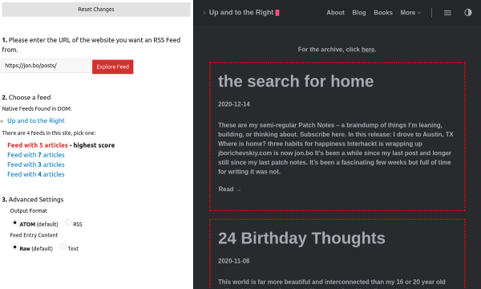
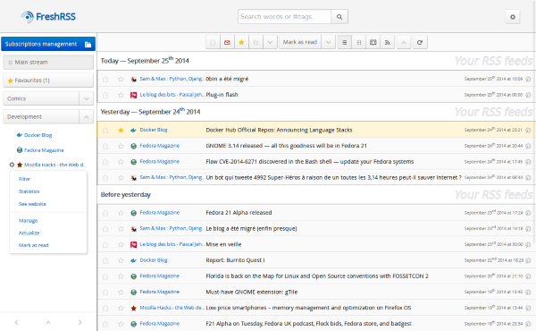
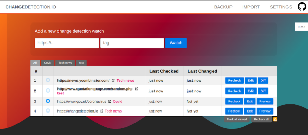
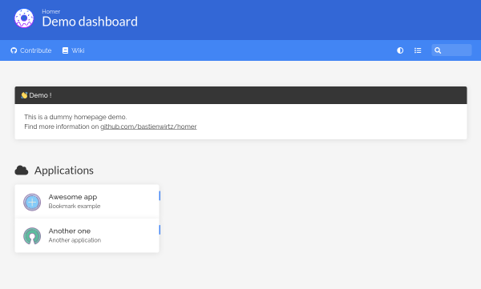
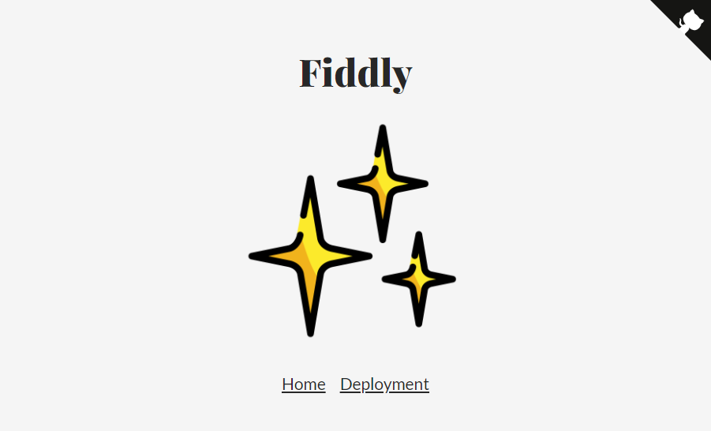
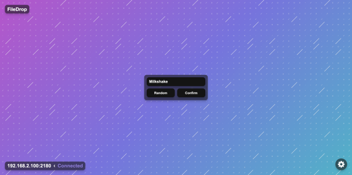

Discoveries #15 - Self Hosted
Especially on Github you can find amazing open source solutions for self hosting, that makes it unnecessary to rely on web services from companies you did not know. In this issue of Discoveries I would like to introduce you to a few of them … Happy Holidays
- AppFlowy
- Bangle.io
- Cal.com (formerly Calendso)
- RSS-proxy
- FreshRSS
- Statsig's Status Page
- changedetection.io
- Homer
- Fiddly
- FileDrop
AppFlowy
by -unknown-https://github.com/AppFlowy-IO/appflowy
AppFlowy.IO is a Notion clone, written in Flutter and Rust und runs on macOS (with installer), Windows and Linux.
Bangle.io
by -unknown-https://github.com/bangle-io/bangle-io
Bangle.io is a web based note taking platform, like Notion, but local only. It is written in TypeScript and relies on Markdown and works also offline.
Cal.com (formerly Calendso)
by Cal.com Teamhttps://github.com/calendso/calendso
Cal.com is an alternative scheduling service to Calendsy, driven by a company as a service, but also available as Open Source for selfhosting. It is written in JavaScript (Next.js).
RSS-proxy
by Github User 'damoeb'https://github.com/damoeb/rss-proxy
RSS-proxy (demo), written in TypeScript, is a web service to create ATOM, RSS or JSON feeds by analyzing a websites static HTML structure. Helpful for websites, that doesn’t provide a feed.
FreshRSS
by Alexandre Alapetite & Othershttps://github.com/FreshRSS/FreshRSS
FreshRSS (demo) is an alternative to feed.ly and other online RSS readers and aggregators, written in PHP. It supports custom tags, push notifications and extensions and has a CLI.
Statsig's Status Page
by statsig.com Teamhttps://github.com/statsig-io/statuspage/
This open source status page solution (demo) uses Github actions to run a sh script every hour against configurable URL’s to check their status and log it in a static index.html.
changedetection.io
by Github User 'dgtlmoon'https://github.com/dgtlmoon/changedetection.io
Web solution for monitoring configurable websites or JSON API’s for changes, written in Python. It detects changes, notifies and shows the differences.
Homer
by Bastien Wirtzhttps://github.com/bastienwirtz/homer
A simple, but nice dashboard for your servers and services, configurable with YAML and written in Vue.
Fiddly
by Sara Vieirahttps://github.com/SaraVieira/fiddly
Fiddly creates customizable HTML pages out of your Github projects README files for hosting on Github Pages , Netlify or others under a dedicated domain.
FileDrop
by Khodadad (Adrian) Nouchinhttps://github.com/Xtrendence/FileDrop
FileDrop is an application to share files in the same network through a browser. It is written in JavaScript and Electron (Server) and is using WebSocket for encrypted transport. Releases are available for Windows, macOS and Linux.
You can interact with this article (applause, criticism, whatever) by mention it in one of your posts, which will be shown here as a Webmention, or by leaving a good old comment with your GitHub account.
Webmentions
No Webmentions yet...
In case your blog software can't send Webmentions, you can use this form to submit me a mention of this article...
Related


Comments